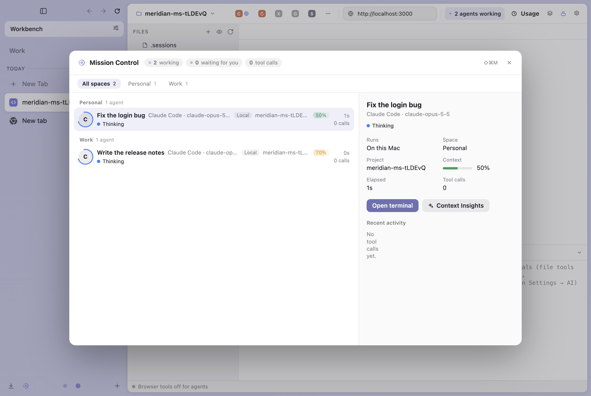

Видно, какую вкладку вы показываете в звонке, и её можно сменить прямо в сайдбаре. Цвет в Boost теперь меняет акценты сайта, а белый фон, текст и картинки оставляет.
0.6.25
November 21, 2026Доступ агентов всегда подчиняется вашим настройкам, даже если у спейса свой профиль.
0.6.24
November 21, 2026Агенты видят фоновую вкладку, в которой работают, и не забирают у вас экран.
0.6.23
November 21, 2026В ответах AI появились настоящие таблицы, а подсказки при настройке говорят, что делать дальше.
Таблицы в ответах AI
Сравнения и цены теперь выглядят как аккуратные таблицы, а не сырой текст. Если AI не настроен, Meridian называет варианты, включая Claude Code и Codex. На Windows первый запуск прямо говорит, что после подключения Claude нужно открыть заново.
0.6.22
November 21, 2026При первом запуске Meridian находит Claude на компьютере и настраивается после одного «Да».
Настройка одним «Да»
Meridian находит Claude Code, Codex или Claude Desktop, подключает их и предлагает спейсы и избранное. Ничего не меняется без вашего согласия, а Undo всё вернёт.
Мелкие исправления
Пути к картинкам с пробелами открываются в терминале, а кнопки агентов в Workbench больше не теряют клик.
0.6.21
November 21, 2026Claude подключается в один клик, а картинки из терминала Workbench открываются прямо в нём.
Агент подключается в один клик
Нажмите Connect, и агент сразу сможет работать с Meridian. Подключённый раньше агент один раз спросит прямо в браузере: разрешить или нет, без похода в настройки.
Картинки и копирование в терминале
Пути к картинкам открываются в большом просмотре, недавние видны миниатюрами, а правый клик даёт Copy, Paste, Clear и Copy Last Answer для всего ответа агента.
0.6.20
November 21, 2026Видно, куда встанет вкладка в сплите, боковая панель стала слегка зернистой, а изменения Git теперь рядом с файлами.
Выбор стороны в сплите
Задержите вкладку над другой: пустая половина покажет, куда она встанет. Сдвиньте влево или вправо и отпустите.
Изменения рядом с файлами в Workbench
Git переехал в левую панель. Видно незакоммиченное, изменения ветки и её pull request, в том числе в репозитории вне проекта, где работал агент: он открывается для просмотра.
Зернистая панель
У спейсов теперь по умолчанию лёгкое зерно. Отключить его можно в Edit Theme.
0.6.19
November 21, 2026Ask подсказывает, что попробовать, делает буст сайта в один клик и переключает AI прямо в чате.
Буст в один клик
Ask больше не открывается пустым. Один клик убирает с сайта лишнее или делает его спокойнее: AI создаёт настоящий буст, объясняет, что изменил, а Undo и Edit сразу под ответом. Ещё он может предложить настройку по вашим спейсам и сайтам, которые вы держите открытыми.
Переключение AI в чате
Имя в шапке Ask теперь меню подключённых AI, и оно всегда показывает, кто отвечает в этом чате. В ⌘T у каждого подключённого AI есть своё слово: gemini, cursor или ollama и Tab. Установленные на компьютере агенты сразу видны в Настройках › AI.
Разрешение для каждого AI
Meridian теперь спрашивает про каждый AI отдельно, а Ask и Workbench помнят один и тот же ответ. В Настройках › AI видно, кому разрешено отправлять всегда, и рядом есть «Ask again».
Исправлено
Теперь видно, что AI работает: точки, пока думает, курсор, пока пишет. В меню «…» в Workbench видны названия всех агентов, и у них больше нет одинаковых букв.
0.6.18
November 21, 2026«Слово + Tab» в командной строке, и поиск по сайту по ключевому слову работает как в Arc.
Слово, потом Tab
В ⌘T ключевое слово поиска по сайту и Tab ищут на этом сайте; claude или codex и Tab спрашивают Claude Code или Codex; ask или ai — AI, выбранный в Настройках › AI; page — вопрос про открытую страницу; summarize и Enter — краткий пересказ страницы. Backspace в пустом поле выходит из режима.
Исправлено
«kiwi pear», где kiwi — ключевое слово поиска по сайту (например, перенесённое из Arc), теперь ищет на этом сайте, а не в поисковике по умолчанию.
0.6.17
November 21, 2026Ответы прямо в командной строке.
Суммы, единицы, валюты, время
Наберите в ⌘T 2+2*3, 15% of 240, 5 km in miles, 100 f to c, 100 usd in eur или time in tokyo, и ответ появится над подсказками; Enter его копирует. Валюты считаются по курсу Европейского центробанка на сегодня: курсы скачиваются при первом запросе, не чаще раза в день, без cookies. Просто число или слово по-прежнему ищется.
0.6.16
November 21, 2026Claude Code по вашей подписке Claude отвечает в ⌘J и Ask.
Claude Code по вашей подписке
В Настройках › AI появился Claude Code: ⌘J и Ask отвечают через Claude Code, который вы сами установили и в котором вошли, по вашей подписке Pro или Max, без ключа API. Meridian запускает его со всеми инструментами выключенными, так что он только отвечает, и не трогает его вход. Если вход не выполнен, Ask подскажет один раз запустить claude в Терминале. Работает на macOS и Windows.
Обновления приходят быстрее
Meridian ищет новую версию каждые 20 минут, а не раз в час. На Windows агенты-CLI, которым нужна песочница, в Настройках › AI честно пишут «пока только macOS», а не молчат в ответ.
0.6.15
November 21, 2026OpenCode снова отвечает в Ask, а текст в Ask можно скопировать.
Исправлено
С версией OpenCode, которая не знает флаг --dir, Ask показывал «Unrecognized flag: --dir» вместо ответа: теперь работает любая версия OpenCode. Вопросы, ответы и ошибки в панели Ask можно выделить и скопировать.
0.6.14
November 20, 2026Meridian сам открывается после падения, а Claude Code продолжает работать.
Снова открыт после падения
Если Meridian всё-таки упадёт, он сам откроется через пару секунд, с вашими вкладками. После обычного выхода не откроется, и не будет открываться снова и снова, если что-то совсем не так. Исправлены два падения, которые случались, пока в браузере работали агенты.
Claude Code переживает падение
На macOS сессии Claude Code в Workbench больше не обрываются, когда Meridian падает: они продолжают работать, а когда Meridian вернётся, Workbench покажет ту же сессию с тем, что она успела сделать. Агенты, которые пользуются инструментами браузера Meridian снаружи, ждут его возвращения, а не выдают ошибку.
Подключение Claude Desktop
В Настройках › AI › Connect рядом с Claude Code и Codex появился Claude Desktop: один щелчок, и у Claude Desktop есть инструменты браузера Meridian. Остальные настройки не меняются, копия старого файла сохраняется.
Агенты выбирают в выпадающих списках
Агенты теперь умеют выбирать варианты в выпадающих списках, которые сайты используют для фильтров, стран, категорий и прочего. Агент, которого просят открыть файл с диска, получает понятный ответ, что открывать можно только веб-страницы, вместо сломанной вкладки.
Сразу до самой новой версии
Если выходит ещё более новая версия, пока предыдущая уже скачана, Meridian берёт самую новую, а не ставит их по очереди.
0.6.13
November 20, 2026Обновления меньше, и агенты продолжают работать, когда Meridian не на переднем плане.
Обновления меньше
Meridian теперь скачивает только то, что изменилось с вашей версии: около 37 МБ вместо 200 МБ. Если что-то не сходится, он скачивает приложение целиком, как раньше. Само обновление до 0.6.13 ещё полное, маленьким будет следующее.
Агенты работают в фоне
Пока агент работает во вкладке, страница рисуется так, будто вы на неё смотрите, даже если вкладка фоновая, а Meridian закрыт другим приложением или свёрнут: списки, диалоги и выбор даты загружаются, скриншоты агента работают. Ваша вкладка при этом не переключается.
0.6.12
November 20, 2026git прямо в Workbench, и поиск по сайтам в командной строке снова работает.
Source Control в Workbench
Ветка и число изменений видны в верхней панели. Панель показывает изменённые файлы, по клику — дифф бок о бок. Можно добавить в коммит, убрать или отменить изменения, закоммитить с сообщением, переключить или создать ветку, сделать pull и push, посмотреть последние коммиты. Если установлен GitHub CLI, видны пулл-реквесты, и можно создать новый.

Исправлено
- Поиск по сайтам (ваш или перенесённый из Arc и Chrome) снова работает в командной строке: «kiwi pear» ищет на сайте, к которому привязано «kiwi», а не в Google.
0.6.11
November 19, 2026Переезд из Google Chrome: закладки, открытые вкладки, входы на сайты, пароли, история и расширения, по пространству на каждый профиль Chrome.
Импорт из Google Chrome
Файл › Import from Chrome… (и в приветственном туре, если Arc на компьютере нет). Каждый профиль Chrome становится пространством с тем же именем: закладки — закреплёнными вкладками и папками, открытые вкладки — вкладками Today, которые загрузятся, только когда вы их откроете. Другие профили Chrome получают свои профили в Meridian.
- Вместе с этим: входы на сайты, пароли и карты, история, автозаполнение, адреса, разрешения сайтов, поисковые системы сайтов, данные сайтов и расширения из Chrome Web Store. Ничего не покидает компьютер, Chrome остаётся как был.
- На Windows Chrome запирает входы на сайты, поэтому там придётся войти заново; пароли и карты переносятся.
0.6.10
November 19, 2026Агенты больше не зависают на фоновой вкладке, сами отвечают на диалоги страниц, а Claude Code, запущенный в обычной вкладке терминала, работает как полноценная вкладка Claude Code.
Агенты отвечают на диалоги страниц
Когда страница показывает alert, confirm, prompt или «Покинуть сайт?», агент видит это и отвечает новым инструментом handle_dialog. В режиме «Спрашивать перед действием» вы сначала подтверждаете; запросы разрешений, выбор файла и окна входа остаются за вами.
Claude Code во вкладке терминала
Если набрать claude в обычной вкладке терминала Workbench (и через ваш алиас тоже), она получает всё, что есть у вкладки Claude Code: имя и заполненность контекста, Context Insights, Mission Control, карточку разрешений, и после перезапуска возвращается в своём режиме. Пока на macOS.
- Вкладки терминала перетаскиваются мышью.
Исправлено
- Вызовы агента во вкладку в фоне могли висеть много минут, и все остальные инструменты ждали вместе с ними. Теперь вкладка, с которой работает агент, не засыпает, страница, которая не отвечает, через 20 секунд даёт ошибку, а вызовы не ждут друг друга.
0.6.9
November 19, 2026Отвечайте агентам с любой страницы, смотрите все спейсы в Mission Control и подключайте свой ИИ-сервер.
Агент спрашивает — отвечаете откуда угодно
Когда Claude Code в Workbench просит разрешение, поверх любой страницы в любом спейсе появляется небольшая карточка: какая сессия и что хочет. Allow, Deny или Always allow — прямо там, или Open, чтобы перейти в её терминал.
- Терминал тоже спрашивает: засчитывается первый ответ, и карточка исчезает.

Mission Control: все спейсы, каждая сессия по имени
Агенты из всех спейсов видны в одном Mission Control и сгруппированы по спейсам. Каждая сессия подписана так же, как её вкладка в Workbench (название сессии Claude Code или ваше), под ним агент и модель, рядом заполненность контекста.
- Кнопка спейса показывает только его агентов; Meridian запоминает выбор.
- Context Insights открывается прямо из карточки сессии.
- OpenCode, Copilot, Cursor и другие агенты тоже видны.
- Сессия, которая закончила ход, но гоняет сборку или тесты в фоне, показана как работающая, а не простаивающая.

Что нового — до перезапуска
Restart to update сначала показывает, что в новой версии, с кнопками Later и Restart now. После обновления открывается эта страница на новой версии.

Свой ИИ-сервер и вопрос перед отправкой в интернет
Settings › AI › Your own server подключает любой OpenAI-совместимый API (корпоративный шлюз, Together, vLLM, сервер дома) по адресу и ключу и предлагает его модели. Когда ИИ-функция или агент впервые собирается что-то отправить в ИИ в интернете, Meridian говорит, куда это уйдёт: отправить сейчас, всегда, выбрать другой ИИ или выключить ИИ.
- Always allow для агента, который управляет браузером, — прямо в его вопросе.
- Meridian проверяет обновления каждый час и когда Mac просыпается.
Все агенты помещаются в верхнюю панель Workbench
На маленьком экране агенты, которые не помещаются, уходят в меню More в конце панели — каждый в одном клике.
Исправлено
- Падение, когда Google Lens искал по странице или PDF. Другие функции Chromium, которые искали панель инструментов Chrome (режим чтения, трансляция, вырезать/копировать/вставить из меню и другие), тоже больше не роняют браузер.
- Падения в «Поделиться», Offers, боковых панелях и режиме чтения в фоновой вкладке. Тесты Meridian теперь прогоняют каждый пункт меню и каждую команду браузера.
- Плашка контекста на вкладке терминала Workbench съезжала вниз, когда контекст доходил до 70%.
- Иконка Workbench в сайдбаре на Mac была серым квадратом.
- Mission Control показывал сессии только одного спейса, и все назывались «Claude Code».
0.6.8
November 18, 2026Вкладки Claude Code возвращаются в том же режиме доступа.
- Вкладка Claude Code после перезапуска сохраняет режим доступа: bypass остаётся bypass, accept edits — accept edits.
0.6.7
November 18, 2026Вкладки Claude Code возвращаются после перезапуска; меньше падений.
Сессии Claude Code переживают обновление
Каждая вкладка Claude Code в Workbench открывается там, где остановилась (claude --resume), в том же порядке и с тем же именем. Закрытая вами вкладка остаётся закрытой.
Исправлено
- Падения на сохранении адреса, отправке вкладки на устройства, «Поделиться», загрузках, входе в аккаунт и экранном дикторе.
- Падения, когда у вкладки спейса другой профиль, чем у окна.
- Ссылка, пришедшая во время запуска Meridian, терялась.
0.6.6
November 18, 2026Context Insights, сплиты как в Arc и Little window в вашем спейсе.
Context Insights для Claude Code
Видно, из чего состоит контекст сессии и куда ушли токены: системный промпт, инструменты, MCP, скиллы, файлы памяти и сообщения, как рос контекст и когда остыл кэш. На каждой вкладке Claude — заполненность контекста, вверху Workbench — лимиты на 5 часов и на неделю. Всё считается на вашем компьютере.

- Сплиты как в Arc: перетащите вкладку Today на середину другой, чтобы разделить; вытащите половину, чтобы отменить.
- Little window открывается в последнем спейсе, с его профилем и входами (macOS).
- Вкладка терминала берёт название сессии Claude Code; двойной клик — переименовать.
0.6.5
November 17, 2026Бусты работают как в Arc.
- Редактор бустов как в Arc: палитра, сетка шрифтов, размер, регистр, тёмная тема и свой код.
- Zap как в Arc: скрыть один элемент или все похожие, у каждого своя отмена.
0.6.4
November 17, 2026Бусты, агенты умеют загружать файлы, исправления.
- Бусты: цвета и шрифт сайта, Zap частей страницы, свои CSS и JavaScript; Improve with Claude пишет буст по описанию; бусты из Arc переезжают.
- Агенты могут загружать файлы на сайт: спрашивать, всегда или никогда — для каждого сайта.
- Картинка в картинке с панелью как в Arc.
Исправлено
- «Найти картинку в Google» роняло браузер.
- Вкладки возвращаются после падения, как после выхода.
0.6.3
November 16, 2026- Сочетания клавиш Meridian работают поверх любой страницы, даже редакторов, которые забирают все клавиши.
- Картинка в картинке как в Arc; «Ссылка скопирована» показывается на миг.
0.6.2
November 15, 2026- Ширина сайдбара меняется перетаскиванием края; любую вкладку можно переименовать двойным кликом.
0.6.1
November 15, 2026- Командная строка находит настройки: наберите
ai,theme,block ads…
0.6.0
November 15, 2026Первый Meridian для Windows и большое обновление на Mac.
- Meridian для Windows с импортом из Arc.
- Полноэкранный режим как в Arc, DevTools внутри окна, видео H.264.
- Из Arc переезжает остальное: история, автозаполнение, карты, разрешения сайтов, архив, пароли и расширения.
Более ранние версии — на GitHub.